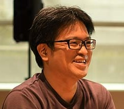

About me
Name
Yasunori Ishii (he/his)

Affiliation and post
Technology Division, Panasonic Holdings Corp.
Post: Lead Engineer
Work experience
April, 2003; Panasonic Corp.
April, 2023; Panasonic Holdings Corp.
Research Interesting
Computer Vision, Patter Recognition, Image Processing, Computational Photography, Deep Learning
Award
The 5th Meeting on Image Recognition and Understanding (MIRU2002): Best Paper Award
Machine Vision and Applications 2013: Best Poster Award
The 23th Meeting on Image Recognition and Understanding (MIRU2020): Best Interaction Presentation Award
Machine Vision and Applications 2021: Best Poster Award
The 27th Meeting on Image Recognition and Understanding (MIRU2024): Audience Award
Panasonic Group Manager Award (2016)
Panasonic Group Buisiness Manager Award (2019)
Panasonic Group Officer Award (2023)
Award(in JP)
MIRU2002 Best Paper Session
MVA2013 Best Poster Award
パナソニック グループ本部長賞(2016)
パナソニック グループ事業部長賞(2019)
MIRU2020 インタラクティブ発表賞
MVA2021 Best Poster Award
令和5年度 ISS査読功労賞
MIRU2024 オーディエンス賞
Paper
Domestic Conference (国内学会投稿・発表）
[PDC1] 鏡平面への映り込みを考慮した Photometric Image-Based Rendering (セッション 2 3 次元画像技術と応用), 石井育規， 向川康博， 尺長健, 研究会講演予稿 190, 57-64
[PDC2] 光学現象の分類基準を利用した画像の線形化 石井育規， 福井孝太郎， 向川康博， 尺長健 画像の認識・理解シンポジウム (MIRU2002), pp. II-167–176 【優秀論文セッション】
[PDC3] 相互反射を含むシーンにおける画像の線形化と光学現象の解析 石井育規， 向川康博， 尺長健 情報処理学会研究報告コンピュータビジョンとイメージメディア (CVIM) 2003 (36 (2002-CVIM-137 …
[PDC4] ブロック差分特徴と向き推定誤り補償を用いた横顔検出 石井育規, 今川和幸, 福宮英二, 岩佐克博, 小倉康伸 (松下電器) 画像の認識理解シンポジウム(MIRU2005)
[PDC5] 赤司竜一，石井育規，長原一，向川康博，谷口倫一郎，八木康史， ``全方位観測による散乱光トモグラフィ'', 画像の認識・理解シンポジウム(MIRU2014), SS2-47, July, 2014.】
[PDC6] MIRU2015 若手の会実施報告 (マルチメディア・仮想環境基礎) 満上育久， 石井育規， 河合紀彦電子情報通信学会技術研究報告= IEICE technical report: 信学技報 115 (415 … 2016
[PDC7] MIRU2015 若手の会実施報告 (パターン認識・メディア理解) 満上育久， 石井育規， 河合紀彦情報通信学会技術研究報告= IEICE technical report: 信学技報 115 (414), 261-268
[PDC8] MIRU2015 若手の会実施報告 満上育久， 石井育規， 河合紀彦， 川西康友， 久保尋之， 米谷竜， 舩冨卓哉 研究報告コンピュータビジョンとイメージメディア (CVIM) 2016 (42), 1-822016
[PDC9] 神谷 龍司, 川口 俊樹, 福井 宏, 石井 育規, 小塚 和紀, 羽川 令子, 築澤 宗太郎, 山内 悠嗣, 山下 隆義, 藤吉 弘亘, Convolutional-Recurrent Neural Network による自己運動識別. 第22回画像センシングシンポジウム(SSII2016) , IS2-13, 2016
[PDC10] 古川 弘憲, 山下 隆義, 山内 悠嗣, 藤吉 弘亘, 石井 育規, 羽川 令子, 2D-QRNNを導入したDCNNによるセマンティックセグメンテーションの高精度化と高速化
[PDC11] 第20回画像の認識理解シンポジウム (MIRU2017), 2017
[PDC12] Destination Network におけるネットワークモデルの検討 家崎遥，平川翼，山下隆義，藤吉弘宣（中部大），藤村亮太， 石井育規，築澤宗太郎（パナソニック）, 平成３０年度 電気・電子・情報関係学会 東海支部連合大会
[PDC13] 異なる条件に対応した秘匿画像を復元する条件付き変分オートエンコーダ 石井育規(パナソニック)，山下隆義(中部大)， 第22回画像の認識・理解シンポジウム (MIRU2019)
[PDC14] Biweight法を用いたノイズにロバストな画像生成 石井育規，藤村亮太，築澤宗太郎，第22回画像の認識・理解シンポジウム (MIRU2019),
[PDC15] 奥野 智行, 中田 洋平, 石井 育規, 築澤 宗太郎, 第26回画像センシングシンポジウム(SSII2020) , IS2-10, ロスレスAI ‐量子化前後の推論結果同一性を担保した学習手法の検討‐
[PDC16] レンズレスマルチピンホールカメラによるプライバシーを配慮した顔認識 , 石井 育規，佐藤 智，山下 隆義, 画像の認識理解シンポジウム(MIRU2020)
[PDC17] レンズレスマルチピンホールカメラからの行動識別, 佐藤 智, チャンシン ヂォゥ, ポンサク ラサン, 石井 育規, 藤村 亮太, 山下 隆義 , 画像の認識理解シンポジウム(MIRU2020) (インタラクティブ発表賞)
[PDC18] CutDepth:エッジ特徴を意識したデプス貼り付けによるデータ拡張, 石井育規 (パナソニック), 山下隆義 (中部大) , 画像の認識理解シンポジウム(MIRU2021)
[PDC19] Frame Shuffle: 時系列情報のシャッフルによる長期行動認識のためのデータ拡張, 石坂 隼, 石井 育規 (パナソニック), Ehsan Adeli (スタンフォード大), 山下 隆義 (中部大), 小塚 和紀 (パナソニック), 画像の認識理解シンポジウム(MIRU2022)
[PDC20] 中村 譲, 石井 育規, 佐藤 智, 丸山 悠樹, 山下 隆義, “ドメイン適応を利用したFIRカメラにおける物体検出,” 信学技報, vol. 121, no. 304, PRMU2021-50, pp. 142-147, 2021年12月.
[PDC21] Ultrasound-based Human Segmentation using Collaborative Learning Probabilistic U-Net, Risako Tanigawa, Yasunori Ishii, Kazuki Kozuka (Panasonic), Takayoshi Yamashita (Chubu Univ.), 画像の認識理解シンポジウム(MIRU2022)
[PDC22] Rethinking Generic Camera Models for Deep Single Image Camera Calibration to Recover Rotation and Fisheye Distortion, Nobuhiko Wakai, Satoshi Sato, Yasunori Ishii (Panasonic), Takayoshi Yamashita (Chubu Univ.) , 画像の認識理解シンポジウム(MIRU2022)
[PDC23] クラス間距離を考慮した混合クラスの選択によるデータ拡張, 藤井 駿伍 (中部大), 小塚 和紀, 石井 育規 (パナソニック), 平川 翼, 山下 隆義, 藤吉 弘亘 (中部大), 画像の認識理解シンポジウム(MIRU2022)
[PDC24] 空中超音波を用いた共同学習変分オートエンコーダによる人物領域の可視化, 日本音響学会講演論文集(2022春), pp.607-610, 2022, 谷川理佐子, 石井育規, 小塚和紀 (パナソニック), 山下隆義 (中部大)
[PDC25] レンズレスマルチピンホールカメラによるプライバシーを配慮した顔認識
電子情報通信学会学会誌(2023年1月号) Vol.106 No.1pp.47-51
https://www.journal.ieice.org/summary.php?id=k106_1_47&year=2023&lang=J
[PDC26] 後藤潤平, 中田洋平, 安倍清史, 石井育規 (パナソニックホールディングス), 山下隆義 (中部大)，正規直交行列によるクラス内の多峰性を考慮したクラス分類, 画像の認識理解シンポジウム(MIRU2023)
[PDC27] 藤井駿伍, 足立浩規 (中部大), 小塚和紀, 石井育規 (パナソニック), 平川翼, 山下隆義, 藤吉弘亘 (中部大)，特徴量の類似性に基づく混合クラスの選択を導入したデータ拡張, 画像の認識理解シンポジウム(MIRU2023)
[PDC28] 中村譲, 石井育規, 丸山悠樹 (パナソニックホールディングス), 山下隆義 (中部大)，ドメイン間の物体領域合成による少量データ向けドメイン適応, 画像の認識理解シンポジウム(MIRU2023)
[PDC29] Nobuhiko Wakai, Satoshi Sato, Yasunori Ishii (Panasonic Holdings), Takayoshi Yamashita (Chubu Univ.)，Deep Single Image Camera Calibration by Heatmap Regression to Recover Fisheye Images Under Manhattan World Assumption Without Ambiguity, 画像の認識理解シンポジウム(MIRU2023)
[PDC30]
行動認識のための人体部位の動きに基づくDeformable Attention, 里 雄二・嘉本海大・植田剛央（パナソニック コネクト）石井育規（パナソニックホールディングス）・山下隆義（中部大）, 信学技報, vol. 123, no. 358, PRMU2023-44, pp. 26-31, 2024年1月.
[PDC31] 鈴木共生, 前野一樹, 橋本潔 (パナソニックコネクト), 石井育規 (パナソニックホールディングス), 山下隆義 (中部大), 物体特徴を捉えるためのFDSLとCGを組合せた事前学習(MIRU2024, Oral)(MIRUオーディエンス賞)
[PDC32] 林尚斗, 平川翼, 山下隆義, 藤吉弘亘 (中部大), 石井育規, 加藤祐介, 小塚和紀 (パナソニックホールディングス), 多様性と学習不足を考慮したデータ選択による自己教師あり継続学習(MIRU2024)
[PDC33] Nobuhiko Wakai, Satoshi Sato, Yasunori Ishii (Panasonic Holdings), Takayoshi Yamashita (Chubu Univ.), Deep Single Image Camera Calibration by Heatmap Regression to Recover Fisheye Images Under Manhattan World Assumption (MIRU2024, 招待講演)
[PDC34] Yuzuru Nakamura, Yasunori Ishii (Panasonic Holdings), Takayoshi Yamashita (Chubu Univ.), Active Domain Adaptation with False Negative Prediction for Object Detection(MIRU2024, 招待講演)
Domestic Journal（国内論文誌）
[PDJ1] 光学現象の分類に基づく画像の線形化 石井育規， 福井孝太郎， 向川康博， 尺長健 情報処理学会論文誌コンピュータビジョンとイメージメディア (CVIM) 44 (SIG05 (CVIM6)), 11-21
[PDJ2] 画像の線形化による光学現象の解析 向川康博， 石井育規， 尺長健 情報処理学会論文誌コンピュータビジョンとイメージメディア (CVIM) 45 (SIG08 (CVIM9)), 40-52
International Conference（国際会議）
[PIC1] "Ishii, Yasunori; Imagawa, Kazuyuki; Fukumiya, Eiji; Iwasa, Katsuhiro; Ogura, Yasunobu; ",Profile face detection using block difference feature for automatic image annotation,2006 Digest of Technical Papers International Conference on Consumer Electronics,,,337-338,2006,IEEE
[PIC2] Y.Mukaigawa, Y.Ishii, T.Shakunaga, "Classification of Photometric Factors Based on Photometric Linearization", Proc. of Asian Conference on Computer Vision (ACCV2006), Vol.2, pp.613-622, Jan.2006.
[PIC3] Y.Ishii, T.Arai, Y.Mukaigawa, J.Tagawa, Y.Yagi, "Scattering Tomography by Monte Carlo Voting", Proc. IAPR International Conference on Machine Vision Applications (MVA2013), May. 2013. (Best Poster Award)
[PIC4] Y.Ishii, T.Arai, Y.Mukaigawa, J.Tagawa, Y.Yagi, "Scattering Tomography by Monte Carlo Voting", The 8th International Workshop on Robust Computer Vision (IWRCV2014), Jan. 2014.
[PIC5] Yasunori Ishii, Reiko Hagawa and Sotaro Tsukizawa, Deep Learning using Heterogeneous Feature Maps for Maxout Networks.
[PIC6] In Proc. 3rd Asian Conference on Pattern Recognition 2015(ACPR2015), pages 459--463, 2015.
[PIC7] Reiko Hagawam, Yasunori Ishii and Sotaro Tsukizawa, Multi-staged deep learning with created coarse and appended fine categories. In Proc. 3rd Asian Conference on Pattern Recognition 2015(ACPR2015), pages 36--40, 2015.
[PIC8] Explain to Fix: A Framework to Interpret and Correct DNN Object Detector Predictions: Denis A Gudovskiy (Panasonic); Alec Hodgkinson (Panasonic); Takuya Yamaguchi (Panasonic); Yasunori Ishii (Panasonic); Sotaro Tsukizawa (Panasonic), NeurIPS2018 Workshop, MLSys: Workshop on Systems for ML and Open Source Software.
[PIC9] Adherent Raindrop Removal with Self-Supervised Attention Maps and Spatio-Temporal Generative Adversarial Networks,; Stefano Alletto, Casey Carlin, Luca Rigazio, Yasunori Ishii, Sotaro Tsukizawa; The IEEE International Conference on Computer Vision (ICCV) Workshop Autonoous Driving, 2019, Oct.
[PIC10] Privacy-Aware Face Recognition with Lensless Multi-Pinhole Camera, Yasunori Ishii, Takayoshi Yamashita, Satoshi Sato, European Conference on Computer Vision(ECCV) Workshop The Bright and Dark Sides of Computer Vision: Challenges and Opportunities for Privacy and Security (CV-COPS20)
[PIC11] Simultaneous Visual Context-aware Path Prediction, Haruka Iesaki, Tsubasa Hirakawa, Takayoshi Yamashita, Hironobu Fujiyoshi, Yasunori Ishii, Kazuki Kozuka, Ryota Fujimura, International Conference on Computer Vision Theory and Applications (VISAPP) 2020
[PIC12] Lossless AI: Toward Guaranteeing Consistency between Inferences Before and After Quantization via Knowledge Distillation T.Okuno, Y. Nakata, Y. Ishii and S.Tsukizawa, 17th International Conference on Machine Vision Applications(MVA2021) (Best Poster Award)
[PIC13] CutDepth:Edge-aware Data Augmentation in Depth Estimation poster, Yasunori Ishii (Panasonic), Takayoshi Yamashita (Chubu University),International Conference on Computer Vision(ICCV) Workhop Interactive Labeling and Data Augmentation for Vision.(https://ildav-workshop.github.io/)
[PIC14] Rethinking Generic Camera Models for Deep Single Image Camera Calibration to Recover Rotation and Fisheye Distortion, Nobuhiko Wakai, Satoshi Sato, Yasunori Ishii ( Panasonic Holdings ), Takayoshi Yamashita ( Chubu University ), European Conference on Computer Vision 2022(ECCV2022)
[PIC15] Risako Tanigawa, Yasunori Ishii, Kazuki Kozuka, Takayoshi Yamashita, Invisible-to-Visible: Privacy-Aware Human Segmentation using Airborne Ultrasound via Collaborative Learning Probabilistic U-Net, ECCV2022 Workshop AV4D: Visual Learning of Sounds in Spaces
[PIC16] Few-shot Adaptive Object Detection with Cross-Domain CutMix, Yuzuru Nakamura, Yasunori Ishii, Yuki Maruyama, Takayoshi Yamashita, Proceedings of the Asian Conference on Computer Vision (ACCV), 2022, pp. 1350-1367
[PIC17] PALF: Pre-Annotation and Camera-LiDAR Late Fusion for the Easy Annotation of Point Clouds, Yucheng Zhang, Masaki Fukuda, Yasunori Ishii, Kyoko Ohshima, Takayoshi Yamashita, 19th International Conference on Machine Vision Applications(MVA2023)
[PIC18] Learning Intra-Class Multimodal Distirubions With Orthonormal Matricies, Jumpei Goto, Yohei Nakata, Kiyofumi Abe, Yasunori Ishii, Takayoshi Yamashita, In Proc. IEEE/CVF Winter Conference on Applications of Computer Vision (WACV), 2024, pp. 1870-1879
[PIC19] hear-your-action: human action recognition by ultrasound active sensing, Risako Tanigawa, Yasunori Ishi, In Proc. IEEE International Conference on Acoustics, Speech and Signal Processing (ICASSP), 2024, pp. 7260-7264
[PIC20] Active Domain Adaptation with False Negative Prediction for Object Detection, Yuzuru Nakamura, Yasunori Ishii, In Proc. IEEE CVF Conference on Computer Vision and Pattern Recognition (CVPR), 2024, p 28782-28793 (Highlight Paper)
[PIC21] Deep Single Image Camera Calibration by Heatmap Regression to Recover Fisheye Images Under Manhattan World Assumption, Nobuhiko Wakai, Satoshi Sato, Yasunori Ishii, Takayoshi Yamashita, In Proc. IEEE CVF Conference on Computer Vision and Pattern Recognition (CVPR), 2024, p 11883-11894
International Journal（国際論文誌）
[PIJ1] "Ishii, Yasunori; FUKUI, Kohtaro; Mukaigawa, Yasuhiro; Shakunaga, Takeshi; ",Photometric linearization based on classification of photometric factors,Trans. ISP J. CVIM,44,5,11-21,2003,Information Processing Society of Japan (IPSJ)
[PIJ2] Y.Mukaigawa, Y.Ishii, T.Shakunaga, ``Analysis of photometric factors based on photometric linearization'', Journal of the Optical Society of America A, Vol. 24, Issue 10, pp. 3326-3334, Oct.2007.
Preprint（プリプリント）
[PP1] Gudovskiy, Denis; Hodgkinson, Alec; Yamaguchi, Takuya; Ishii, Yasunori; Tsukizawa, Sotaro; ,Explain to Fix: A Framework to Interpret and Correct DNN Object Detector Predictions,arXiv preprint arXiv:1811.08011
[PP2] CutDepth:Edge-aware Data Augmentation in Depth Estimation poster, Yasunori Ishii (Panasonic), Takayoshi Yamashita (Chubu University),
arXiv preprint arXiv:2107.07684 [cs.CV])
[PP3] Rethinking Generic Camera Models for Deep Single Image Camera Calibration to Recover Rotation and Fisheye Distortion, Nobuhiko Wakai, Satoshi Sato, Yasunori Ishii (Panasonic), Takayoshi Yamashita (Chubu University),
arXiv preprint arXiv:2111.12927 [cs.CV]
[PP4] Invisible-to-Visible: Privacy-Aware Human Instance Segmentation using Airborne Ultrasound via Collaborative Learning Variational Autoencoder, Risako Tanigawa, Yasunori Ishii, Kazuki Kozuka (Panasonic), Takayoshi Yamashita (Chubu University),
arXiv preprint arXiv:2204.07280 [cs.CV]
[PP5] Invisible-to-Visible: Privacy-Aware Human Segmentation using Airborne Ultrasound via Collaborative Learning Probabilistic U-Net, Risako Tanigawa, Yasunori Ishii, Kazuki Kozuka (Panasonic), Takayoshi Yamashita (Chubu University),
arXiv preprint arXiv:2205.05293 [cs.CV]
[PP6] Few-shot Adaptive Object Detection with Cross-Domain CutMix
Yuzuru Nakamura, Yasunori Ishii, Yuki Maruyama, Takayoshi Yamashita
arXiv:2208.14586 [cs.CV]
[PP7] Data Augmentation by Selecting Mixed Classes Considering Distance Between Classes, Shungo Fujii, Yasunori Ishii, Kazuki Kozuka, Tsubasa Hirakawa, Takayoshi Yamashita, Hironobu Fujiyoshi
arXiv preprint arXiv:2209.05122 [cs.CV]
[PP8] Masking and Mixing Adversarial Training
Hiroki Adachi, Tsubasa Hirakawa, Takayoshi Yamashita, Hironobu Fujiyoshi, Yasunori Ishii, Kazuki Kozuka
arXiv:2302.08066 [cs.CV]
[PP9] Deep Single Image Camera Calibration by Heatmap Regression to Recover Fisheye Images Under ManhattanWorld AssumptionWithout Ambiguity
Nobuhiko Wakai, Satoshi Sato, Yasunori Ishii, Takayoshi Yamashita
arXiv:2303.17166 [cs.CV]
[PP10] PALF: Pre-Annotation and Camera-LiDAR Late Fusion for the Easy Annotation of Point Clouds
Yucheng Zhang, Masaki Fukuda, Yasunori Ishii, Kyoko Ohshima, Takayoshi Yamashita
arXiv preprint arXiv:2304.08591 [cs.CV]
[PP11] hear-your-action: human action recognition by ultrasound active sensing
Risako Tanigawa, Yasunori Ishii
arXiv preprint arXiv:2309.08087 [cs.CV]
Talk （講演）
[T1] 全脳アーキテクチャ若手の会 関西支部異文化交流会 "ミニドラから考えるAIエージェントの未来セッション", 2017年10月
[T2] 岡山大学 スーパーグローバルカミングデー, 「パナソニックで取り組んできた研究開発事例とそこで活きた学生時代の経験」, 2017年10月
[T3] 中部大学 画像情報処理, 2018年7月
[T4] Panasonic x AI REAL Tech Talk vol.1: パナソニックの先端AI研究 2022.3.16
https://panasonic-ai.connpass.com/event/240655/>
https://panasonic-ai.connpass.com/event/240655/
[T5] 室蘭工業大学 応用情報学特論, 2023年4月
[T5] 室蘭工業大学 応用情報学特論, 2024年5月
Press release and related web article（プレスリリースやWeb記事）
[P1] ECCV2022
Panasonic Press Release: Panasonic Holdings Develops Advanced AI Technology, Accepted to ECCV2022, and IROS2022,
Top Conferences in the Field of AI and Robotics
https://news.panasonic.com/global/press/en220928-2
Panasonic プレスリリース: AI・ロボティクス分野のトップカンファレンスECCV2022、およびIROS2022に論文採択
https://news.panasonic.com/jp/press/jn220928-1
https://tech-ai.panasonic.com/jp/news_page.html?id=20220928
技術紹介ブログ
https://tech-ai.panasonic.com/jp/blog_page.html?id=20221024
https://tech-ai.panasonic.com/jp/blog_page.html?id=20221024
パナソニック、写真1枚でゆがみ補正 革新的な新手法, 日経新聞 2022年12月5日
https://www.nikkei.com/article/DGXZQOUC257W50V21C22A1000000/
「学習時間27年を1日に」、パナソニックの若手が画像処理で画期的成果, 日経クロステック 2022年11月24日
https://xtech.nikkei.com/atcl/nxt/column/18/00001/07420/
Panasonic Develops New Method That Corrects Fisheye Distortion in Photos
https://petapixel.com/2022/12/06/panasonic-develops-new-method-that-corrects-fisheye-distortion-in-photos/
[P2] ACCV2022
Panasonic Press Release: Panasonic HD develops new technology that can reduce the cost of data preparation necessary for training AI models
https://news.panasonic.com/global/press/en230523-2
Panasonic プレスリリース: パナソニックHD、AIモデル学習時のデータ構築コストを削減する技術を開発
https://news.panasonic.com/jp/press/jn230523-1
[P3] WACV2024
Panasonic Press Release: Panasonic HD Develops Image Recognition AI With New Classification Algorithm That Can Handle Multimodal Distribution
https://news.panasonic.com/global/press/en231225-4
Panasonic プレスリリース:～見た目のバラエティが豊かなカテゴリもうまく認識～ パナソニックHD、多様な画像特徴を滑らかに捉える画像分類AIを開発
https://news.panasonic.com/jp/press/jn231225-3
[P4] CVPR2024
Panasonic Press Release: Panasonic Holdings Focuses on “overlooked data” in AI Models and Develops New Technology Useful for Deploying AI in Multiple Sites
https://news.panasonic.com/global/press/en240605-3
Panasonic プレスリリース: パナソニックHD、AIモデルの「見落とし」に着目した、AIの多現場展開に役立つ新技術を開発
https://news.panasonic.com/jp/press/jn240605-2
Panasonic Press Release: Panasonic Holdings Develops Fisheye Camera Angle Estimation Technology Applying Pose Estimation, Supporting Accurate Positioning and Navigation in Physical Spaces
https://news.panasonic.com/global/press/en240605-5
Panasonic プレスリリース: パナソニックHD、姿勢推定技術を応用した魚眼カメラ角度推定技術を開発
https://news.panasonic.com/jp/press/jn240605-4
Interview
Interview
[I1] 日経Robototics.2020年9月号 "パナソニックが圧縮と併用で品質保証しやすい学習技術、組み込みディープニューラルネットの開発工数を5割削減へ", 2020.8.11,
https://xtech.nikkei.com/atcl/nxt/mag/rob/18/012600001/00061/?fbclid=IwAR1O5paiBc6m7PU6_2771LrmELYQ8XW_kmL9ObP3_VHyHzgkiI6t2z1fZII
[I2] パナソニックの#はたらくってなんだろう, 組込み軽量化前後の挙動の不一致を抑制、高品質AIで開発工数を短縮化,
https://recruit.jpn.panasonic.com/feed/lossless_ai.html
[I3] ディープラーニング初心者の音響エンジニアが半年で論文投稿へ ― 若手を着実に成長させるパナソニックのトップ人材育成プログラムREAL-AI
https://tech-ai.panasonic.com/jp/researcher_interview/018/
[I4] 入社2年目で思い切って飛び込んだREAL-AI‐初めての国際会議投稿を経て得たものとは
https://tech-ai.panasonic.com/jp/researcher_interview/020/
Patent
Domestic(国内)
https://patentfield.com/patents?q=%E7%9F%B3%E4%BA%95%E8%82%B2%E8%A6%8F&view%5Bcolor_set%5D%5B%5D=
Global(海外)
https://patentfield.com/patents?q=%22yasunori%20ishii%22%20and%20%22panasonic%22&view%5Bcolor_set%5D%5B%5D=#/